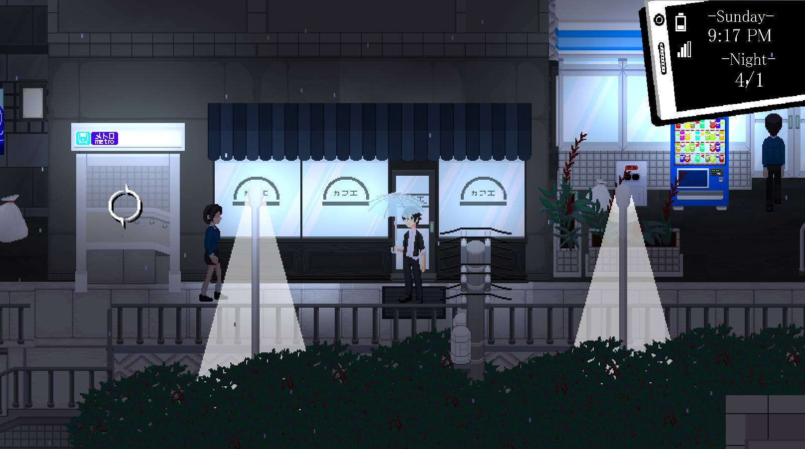

Rainfall ~ Do You Still Like This World?

Overview
Jin Akiyama is a college dropout turned light novel author. Sustained by his constant stream of pandering, unoriginal work, Jin enjoys a carefree life casually drifting through each day. Pursuing his ever-shifting whims, a conflict to forcibly reshape the future unfolds around him. Fantasy and reality blur in a battle royale of desire for a single truth: Do you still like this world?
Taking place over the course of a year, you must make decisions on how and where to spend the time in your day. Fish and deepen the bonds between an apathetic author and a lonely old man. Stumble into a foot-race between the police and a strange eccentric girl after an intense night of drinking. Investigate rumors to unravel the identities of those imbued with the powers of gods. You must write fate and take the actions that will forge the future you desire.
The game uses an Active Social System, where social interaction and dialogue evolve from turn-based to real-time events. Static paths have been replaced by dynamic opportunities. Gathering rumors reveals new chat options, ignoring characters may change their reactions, and deciding how and where you interact with characters will affect how they view you. It's not just what you say, but what you do that decides the outcome.
Development Blog Posts
Rainfall Dev Blog #1: Jan 2017 - Feb 2018Rainfall: Active Choice
Rainfall: Characters Rainfall Dev Blog #2: Feb 2018 - Apr 2018
Pixel Perfection
Rainfall Dev Blog #3: May 2018 - June 2018
Rainfall Dev Blog #4: July 2018 - September 2018
Construction of Mari’s Dungeon
On Card Game Archetypes
Rainfall Dev Blog #5: September 2018 - December 2018
Rainfall: 2018 Year In Review
Rainfall Dev Blog #6: January 2019